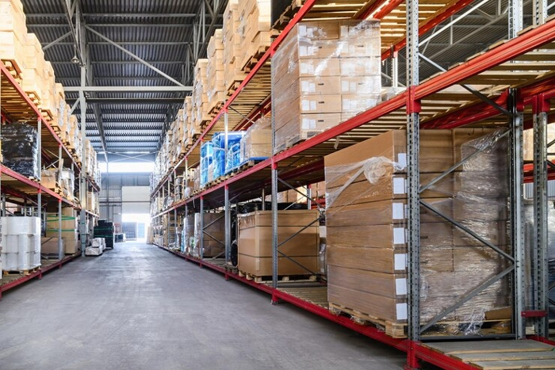
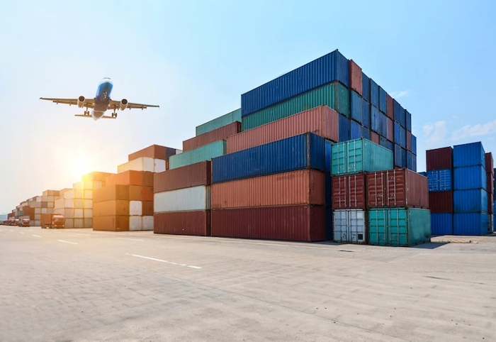

Cost efficiency, accessibility, and scalability are just a few of the many benefits of outsourcing your logistics needs to a logistics solutions provider. New companies, small businesses, and startups all have the same end goals: to expand and grow. And achieving these goals requires funding, which requires capital. The most effective way to scale up your company is to outsource your logistics to a logistics solutions provider.
Regardless of the size of a business or the type of its activities, it must always strive to move towards greater growth. This usually means extending its reach to multiple locations both domestically and internationally.

Proficient logistics companies will have specialists who have a clear understanding of various tricky technologies, making them an appropriate pick to supervise your supply line. They'll be able to ascertain the most effective circulation routes to meet the supply chain demands of the customer while meeting your objectives.
The skill of the workers will be attained after a long period of involvement in a specific area. They will undergo an elaborate selection process to find the most suitable person for a specific position within the industry. For that reason, they will be satisfied with having the opportunity to hire professionals with extensive knowledge in the segment.
In the business of competition, the use of advanced technology and products and services is a vital aspect. However, there is a drawback in using certain advanced technology or products when it is not related to these activities. However, when you have a logistics company, all your needs will be covered by these logistical services.
Companies that are not logistics-related may spend less money by stocking up on vehicles, storage spaces, and so on. If you choose to partner with logistic service providers, you will be relieved of the burden of operational costs. This will enable you to simultaneously handle operational matters with the providers.
Along with other remarkable benefits, saving time is one of the main benefits of working with a trusted Logistics partner. If you are trying to supply your product across multiple locations, time can be really critical. It is also highly dependent on the type of merchandise that you are offering. If the shelf life of the goods is less, then it is particularly important to reach the final destination on time. A reliable and competent provider will help in achieving this aspect effectively. They are prepared to comply with standards and laws of specific places leading to quicker product supply.

The supply chain is closely linked to the logistics network, which is closely linked to the varying customer requirements for optimal outcomes. The majority of shopping in this era occurs through smartphone apps with customers very informed about the preferred delivery times. By hiring a dependable logistics service provider, businesses are able to send order requests with confidence. To ensure that the shipment process smoothly progresses, all the details are carefully arranged. Expert professionals will direct products to their rightful destinations using the most insightful strategies available to them.
Any type of business will take advantage of mutually beneficial relationships to maximize efficiency. Since transportation operations involve different individuals, it has many modes. It is imperative that efficient logistics procedures are maintained to ship the product to the final destination, as efficient relations with all the parties involved are crucial for a successful delivery of any item. Logistics services will maintain stable relationships with all the entities involved in the process, ensuring that the latter get their products delivered in good time.
Businesses must always seek methods to counteract risks in their supply chains. Superior logistic services will have the knowledge and technical skill to address the risks to keep supply chains functioning smoothly. The use of technology such as AI (artificial intelligence) and ML (machine learning) is helping organizations avoid difficulties before they occur. This enables them to decide on the requirements and budget factors given the latest trends.
In conclusion, logistics is a multi-billion dollar industry. It is a lucrative industry, but people are attracted to it because of the many opportunities it can provide. There are many benefits of the logistics industry. For example, it can reduce transportation costs, increase efficiency, reduce inventory, and ensure security.